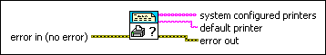
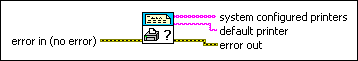

Query Available Printers VI
Owning Palette: Advanced Report Generation VIs
Requires: Base Development System
Lists the printers available on the computer, including the default printer in LabVIEW.

 Add to the block diagram Add to the block diagram |
 Find on the palette Find on the palette |
Owning Palette: Advanced Report Generation VIs
Requires: Base Development System
Lists the printers available on the computer, including the default printer in LabVIEW.

| Add to the block diagram |
Find on the palette |
 |
error in describes error conditions that occur before this node runs. This input provides standard error in functionality. |
 |
system configured printers contains the names of printers available on the computer. The VI returns the printer names in an array in alphabetical order. You also can use the Printing:Available Printers property to obtain a list of printer names programmatically. |
 |
default printer is the name of the default printer in LabVIEW. When you start LabVIEW, the default printer in LabVIEW is the same as the system default printer. However, any time you print in LabVIEW, the printer you use becomes the default printer in LabVIEW. LabVIEW no longer recognizes changes to the system default printer until you restart LabVIEW. You can use the Printing:Default Printer property to set the default printer in LabVIEW programmatically. |
 |
error out contains error information. This output provides standard error out functionality. |